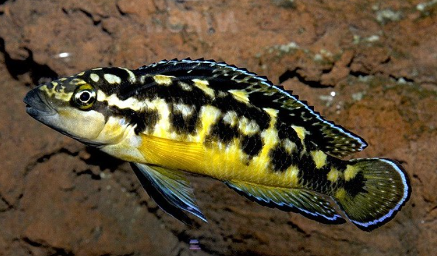
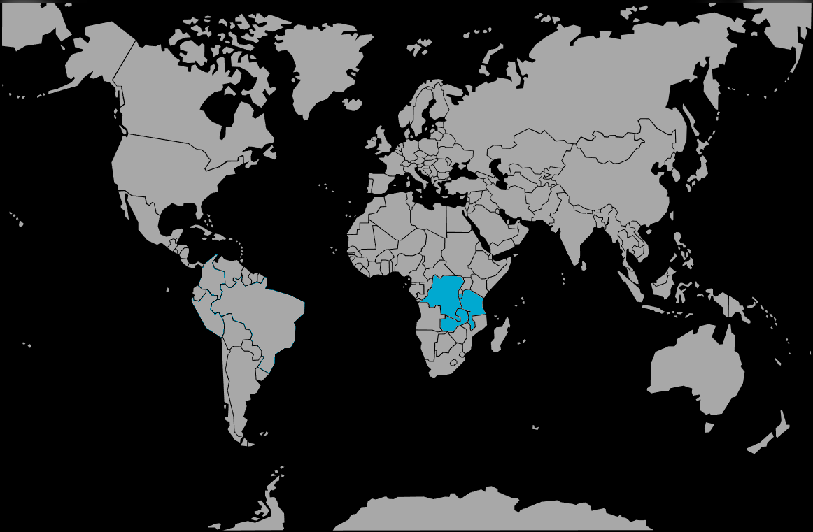

Systématique
- Ordre : Cichliformes
- Famille : Cichlidae
- Genre : Julidochromis
- Espèce : J. transcriptus

Julidochromis transcriptus est l'une des plus petites espèces de son genre, endémique du lac Tanganyika. Décrit par Matthes en 1959, ce cichlidé appartient à la tribu des Lamprologini. Il se distingue par son patron mélanique complexe composé de damiers noirs sur un fond blanc nacré, ce qui lui vaut d'être très prisé pour les aquariums de volume modeste.
La taille maximale de l'espèce avoisine les 7 cm, ce qui en fait un "Julido" nain. Le corps est allongé, de forme cylindrique, typique des poissons vivant dans les fissures. Les nageoires sont bordées d'un liseré bleu électrique très marqué sous un éclairage adapté. Il existe plusieurs variétés géographiques, notamment la forme "Gombe" ou "Bemba", qui présentent des variations dans la densité et la disposition des taches noires.
Contrairement à d'autres membres du genre, sa petite taille lui permet d'exploiter des cavités extrêmement réduites. Ses écailles sont rugueuses au toucher, une caractéristique commune aux Julidochromis qui les aide à se maintenir fermement ancrés dans les anfractuosités face aux courants ou aux prédateurs.
Julidochromis transcriptus est un poisson rupicole (vivant dans les roches) au tempérament territorial. Son mode de déplacement est singulier : il nage très près des parois rocheuses, épousant parfaitement le relief du décor, souvent à l'envers ou à la verticale. Cette espèce ne s'éloigne que très rarement de son abri.
Bien que territorial, il est moins agressif que J. marlieri ou J. regani. Toutefois, une fois qu'un couple est formé, il défend farouchement son territoire contre tout intrus. Une particularité notable du genre est la fragilité du lien de couple : si le décor est brusquement modifié ou si un stress important survient, le couple peut se briser, entraînant souvent la mort du partenaire le plus faible.
Mode : Ovipare, pondeur sur substrat caché (voûte de grotte ou fente).
Le couple choisit une fissure étroite où la femelle dépose ses œufs (généralement entre 20 et 50). La ponte est discrète et se déroule souvent à l'abri des regards. Les parents pratiquent une garde familiale : il n'est pas rare de voir plusieurs générations d'alevins cohabiter sur le même territoire, les plus grands protégeant indirectement les plus jeunes.
Les œufs éclosent en environ 3 jours à 26°C. Les alevins, minuscules et sombres, restent d'abord collés aux parois de la grotte avant d'entamer une nage libre très prudente. Ils se nourrissent de la microfaune présente sur le substrat rocheux.
Dimorphisme sexuel : Quasiment inexistant. Le mâle est parfois légèrement plus svelte que la femelle. La détermination certaine nécessite l'observation des papilles génitales à l'âge adulte (la femelle possédant une papille plus large et arrondie).
Espérance de vie : 5 à 8 ans en aquarium, parfois plus dans des conditions optimales.
L'espèce fréquente les zones rocheuses littorales du lac Tanganyika, particulièrement le long de la côte congolaise et burundaise. Elle occupe principalement les habitats de transition où les roches sédimentaires offrent de multiples failles. On le trouve généralement à des profondeurs faibles à modérées, entre 1 et 10 mètres.
L'eau y est limpide, fortement minéralisée et très stable thermiquement. Les roches sont couvertes d'un bio-film riche en micro-organismes, servant de base alimentaire aux jeunes et complétant le régime des adultes.
Répartition

Origine naturelle :
- Afrique : Lac Tanganyika (endémique).
- Localisation : Principalement observé sur les côtes du Nord-Ouest (RD Congo) et du Burundi.
- Variétés connues : Bemba, Gombe, Kissi, Luhanga.
Populations sauvages stables, mais sensibles à la pollution côtière locale.
Paramètres de maintenance
Température : 24 à 27 °C.
pH : 8,2 à 9,2.
GH : 10 à 20 °dGH.
Courant : Modéré à faible, mais brassage suffisant pour garantir une oxygénation saturente.
Volume conseillé : Minimum 80-100 litres pour un couple. Nécessite impérativement un empilement de roches (calcaire de préférence) créant de nombreuses cachettes.
Régime alimentaire
Régime : Omnivore à tendance carnivore (invertébrés, petits crustacés).
En aquarium, il accepte volontiers les nourritures usuelles : granulés de petite taille, paillettes, artémias, mysis et daphnies.
Il est recommandé de varier les apports avec des proies vivantes ou congelées pour maintenir l'éclat des couleurs et favoriser la reproduction.